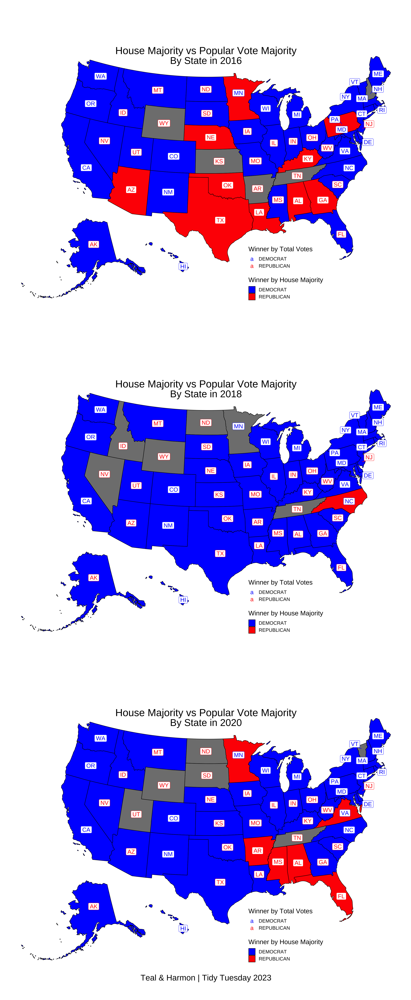

Analyzing Trends in House of Representatives from 2016-2020
INFO 526 - Project 1
Author
The Power of The Voters
Abstract
Add project abstract here.
Question 1: How did congressional voting trends change from 2016-2020
Setup
if(!require(pacman))install.packages("pacman") #utilize pacman to load each package, while ensuring nothing is redownloaded unnecesarily
Loading required package: pacman
options(timeout =1200) #sf takes forever to download so we have to increase the timeout timepacman::p_load(tidyverse, #Add new packages as necessary here, devtools, dlookr, dplyr, usmap, sf, ggrepel, scales, usmapdata, grid, ggpubr )
Add new sections as necessary [DELETE BEFORE TURNING IN]
EDA
elec <- readr::read_csv('data/house.csv')
Rows: 32452 Columns: 20
── Column specification ────────────────────────────────────────────────────────
Delimiter: ","
chr (8): state, state_po, office, district, stage, candidate, party, mode
dbl (7): year, state_fips, state_cen, state_ic, candidatevotes, totalvotes, ...
lgl (5): runoff, special, writein, unofficial, fusion_ticket
ℹ Use `spec()` to retrieve the full column specification for this data.
ℹ Specify the column types or set `show_col_types = FALSE` to quiet this message.
elec16to20 <- elec |>filter(between(year,2016,2020)) #filter years to between 2016 and 2020#ggplot(elec) |> #create a plot to show change house elections from entire dataset
Data Wrangling
for (date inc(2016, #aggregate state mode of party to determine which party has the 2018, #majority2020)) { result <- elec16to20 |>filter(year == date) |>group_by(state) |>summarize(winnerByHouseMajority =names(which.max(table(party))))assign(paste0('partyMaj', date), result)}for(date inc(2016,2018,2020)) { #for each state determine which party got the most votes result <- elec16to20 |>filter(year == date) |>group_by(state) |>summarize(winnerByTotalVotes = party[which.max(candidatevotes)], partyVotes =sum(candidatevotes)) |>mutate(fips =fips(state)) #necessary for plotting on US map only on this plot because we will mergeassign(paste0('genMaj', date), result)}data2016 <-merge(genMaj2016,partyMaj2016) |>merge(centroid_labels(regions =c('states')), by ="fips") #adds in data for centroid of each state for labelingdata2018 <-merge(genMaj2018, partyMaj2018) |>merge(centroid_labels(regions =c('states')), by ="fips")data2020 <-merge(genMaj2020, partyMaj2020) |>merge(centroid_labels(regions =c('states')), by ="fips")
Data Visualization
#general plot just to get used to the function. We can add layers like a ggplot object#For Question 1 we want three maps of the US where each state is colored based on the winning party, then also a number for each state corresponding to the party that had the most votes us2016 <-plot_usmap(data = data2016, values ="winnerByHouseMajority", labels =FALSE) +scale_fill_manual(name ='Winner by House Majority', values =c("REPUBLICAN"='red' , "DEMOCRAT"='blue'))+geom_label_repel(data = data2016,aes(label = abbr,geometry = geom,color = winnerByTotalVotes),stat ='sf_coordinates',size =5,force =0.01, min.segment.length =0) +scale_color_manual(name ='Winner by Total Votes', values =c("REPUBLICAN"="red", "DEMOCRAT"="blue")) +guides(color =guide_legend(title ="Winner by Total Votes")) +labs(title ='House Majority vs Popular Vote Majority',subtitle ="By State in 2016",#caption = "Teal & Harmon | Tidy Tuesday 2023" ) +theme(plot.title =element_text(size =25, hjust =0.5, vjust =-10),plot.subtitle =element_text(size =24, hjust =0.5, vjust =-10),#plot.caption = element_text(size = 20, hjust = 0.5),legend.text =element_text(size =12, hjust =0),legend.title =element_text(size =16, hjust=0),legend.position =c(0.6,0.03) )us2018 <-plot_usmap(data = data2018, values ="winnerByHouseMajority", labels =FALSE) +scale_fill_manual(name ='Winner by House Majority', values =c("REPUBLICAN"='red' , "DEMOCRAT"='blue'))+geom_label_repel(data = data2016,aes(label = abbr,geometry = geom,color = winnerByTotalVotes),stat ='sf_coordinates',size =5,force =0.01, min.segment.length =0) +scale_color_manual(name ='Winner by Total Votes', values =c("REPUBLICAN"="red", "DEMOCRAT"="blue")) +guides(color =guide_legend(title ="Winner by Total Votes")) +labs(title ='House Majority vs Popular Vote Majority',subtitle ="By State in 2018",#caption = "Teal & Harmon | Tidy Tuesday 2023" ) +theme(plot.title =element_text(size =25, hjust =0.5, vjust =-10),plot.subtitle =element_text(size =24, hjust =0.5, vjust =-10),#plot.caption = element_text(size = 20, hjust = 0.5),legend.text =element_text(size =12, hjust =0),legend.title =element_text(size =16, hjust=0),legend.position =c(0.6,0.03) )us2020 <-plot_usmap(data = data2020, values ="winnerByHouseMajority", labels =FALSE) +scale_fill_manual(name ='Winner by House Majority', values =c("REPUBLICAN"='red' , "DEMOCRAT"='blue'))+geom_label_repel(data = data2016,aes(label = abbr,geometry = geom,color = winnerByTotalVotes),stat ='sf_coordinates',size =5,force =0.01, min.segment.length =0,force_pull =0.5) +scale_color_manual(name ='Winner by Total Votes', values =c("REPUBLICAN"="red", "DEMOCRAT"="blue")) +guides(color =guide_legend(title ="Winner by Total Votes")) +labs(title ='House Majority vs Popular Vote Majority',subtitle ="By State in 2020",caption ="Teal & Harmon | Tidy Tuesday 2023" ) +theme(plot.title =element_text(size =25, hjust =0.5, vjust =-10),plot.subtitle =element_text(size =24, hjust =0.5, vjust =-10),plot.caption =element_text(size =20, hjust =0.5),legend.text =element_text(size =12, hjust =0),legend.title =element_text(size =16, hjust=0),legend.position =c(0.6,0.03) )ggarrange(us2016, us2018, us2020, ncol =1)

Insight Gained
The visualization of the House of Representatives broken down by district majority and popular vote majority provides multiple insights. 1) The sentiment of the general population is often overlooked by the electoral (district) system. 2) During a single presidency, the sentiment of the people will change significantly 3) Well known trends can be seen such as midterm elections supporting the opposite party of the incumbent president.